OVERVIEW
In this project, I am in charge of Search Engine Optimization (SEO) Audit. I used SEO Audit Metrics to identify usability problems for two website, Sue Rock Originals and Sue Rock Shopify. Combining technical functionality with marketing, successful SEO makes a site appealing to both users and search engines. The analytics of SEO conducted with five categories, which are General, HTML, Content, Architecture, and Social Media. I noted the findings in this Spreadsheets and wrote down recommentaitons in our digital anlytics report.
Also, I am the visual designer of the analytics report and the presentation slides.
OBJECTIVE
Using Instagram data, Google Analytics, and SEO audit to analyze patterns.
ITEM
Graduate team project
IN CHARGE
SEO Audit Analytics, Report Design, Slides Design
TOOLS
Tableau, Google Data Studio, Google Analytics, Google Spreadsheets
PERIOD
Feb 2020 - May 2020
BACKGROUND
Sue Rock Originals is a non-profit textile charity based in New York City for 14 years. They support survivors of domestic violence by donating clothing and providing classes to develop skills in the needle arts. Just as domestic violence affects individuals across gender, sexual orientation, race, age, and socio-economic background, Sue Rock Originals is an inclusive brand that seeks to meaningfully connect with people from all different circumstances.
PROJECT GOALS & SCOPE
- Goal: using the social media accounts and websites
- To raise awareness of the Sue Rock Originals brand
- To grow audience to increase textile sales.
- Scope: conduct a comprehensive analysis of Sue Rock Originals’ Instagram and two websites.
- Methodology:
- Interview to understand the mission and scope
- Instagram Metrics of 2 years post on engagement and content
- Web Analytics Metrics of user behavior and performance
- SEO Audit Metrics to identify usability problems
- Visualization Tools: Tableau & Google Data Studio
- Dates Analyzed: Sep, 2018 - Apr, 2020
ANALYSIS PROCESS
Search Engine Optimization (SEO) Audit
SEO Audit is used to optimize a website as well as all the content on that website. SEO requires an understanding of how search engines work, what people search for, and why and how people search.
In this report, I categorized the findings into General, HTML, Content, Architecture, and Social.
General
To understand the brand appearance in search results, I inputted "Sue Rock Originals" and "Sue Rock Shopify" on Google search bar. The result shows that Sue Rock Originals is the first Google result. However, Sue Rock Shopify failed and ranked the second Google Search result after Shopify advertisement.
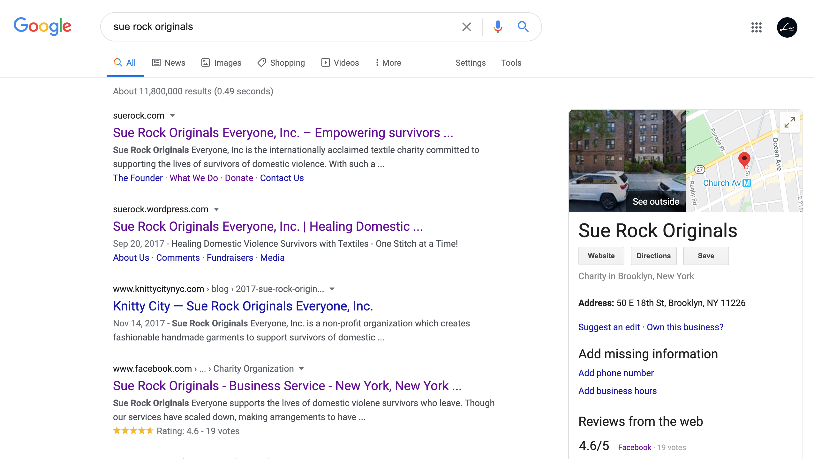On the search result page, I also review the total pages indexed on each website. Both websites pass this item: Sue Rock Originals shows that pages are properly indexed and about 14,300,000 results. And Sue Rock Shopify has approximately 3,220,000 results.
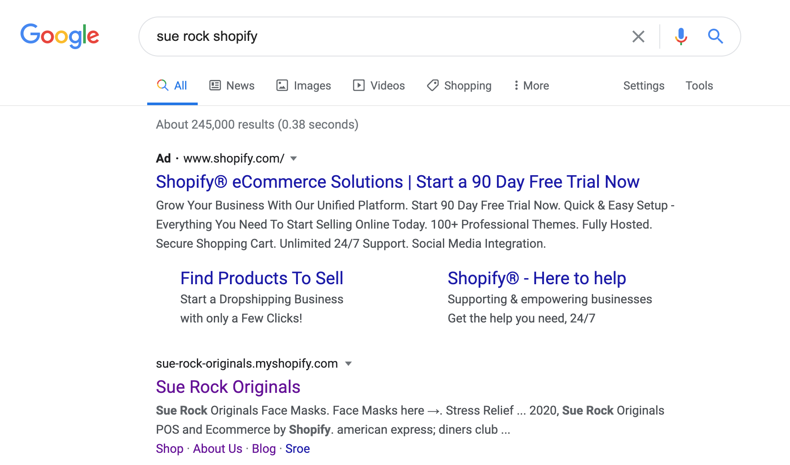Analysis:
- Google Search input “Sue Rock”, the name is the same as a movie on IMDB, an actress (Sue Rock).
- Google Search must input “Sue Rock Originals” for the result.
- Google Search input “Sue Rock Shopify”, the website is the second Google Search result (after Shopify ads).
HTML
I installed MozBar Extension from Chrome Web Store on my Google browser to help me audit the HTML. MozBar is a toolset to do on-the-fly keyword research, page analysis, and link data from inside the browser.
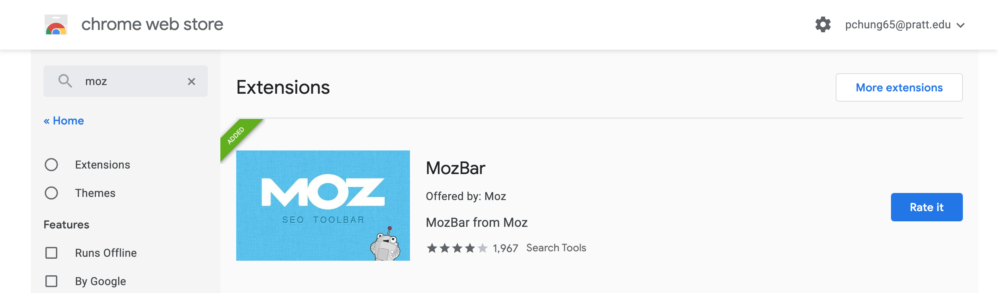After installing the MozBar extension, I checked two websites' page titles, meta descriptions, URLs descriptive, headings, and image descriptions. Basically, I can find out all the answers in the On-Page Elements.
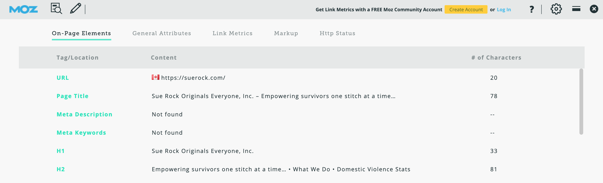However, to achieve a more rigorous review, I have to use WooRank for additional analysis and verify results on Moz. WooRank provides helpful tools that give users actionable insight to optimize websites and marketing efforts. Although MozBar is a convenient tool that allows you to check the analysis result of a website quickly, I strongly recommend reviewing the site again on WooRank. Sometimes, you may find out the result are a little bit different in two tools.
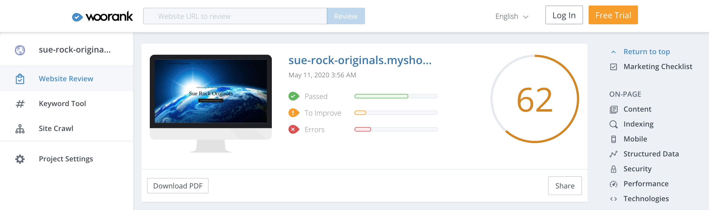WooRank offered a further detailed explanation of each classification. You can also know how much the problem impacts your website, and the problem is easy to solve or not.
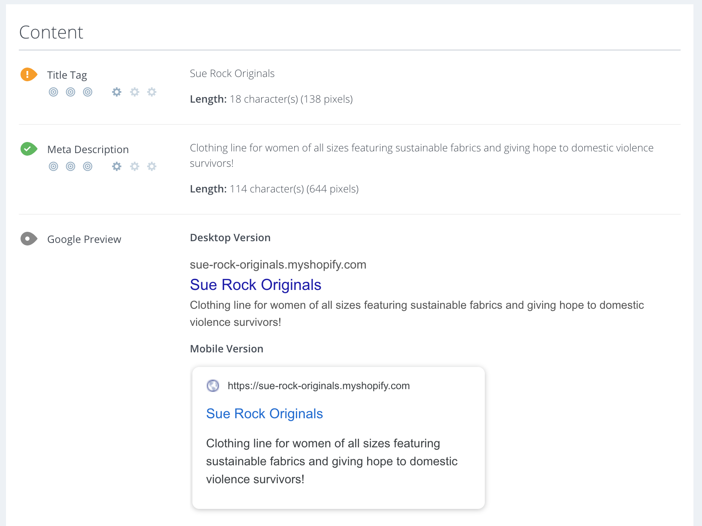Analysis:
- Suggest different page titles for Sue Rock Shopify to distinguish from Sue Rock Originals and Shopify. For example, Sue Rock Shop, Sue Rock Store...etc.
Content
Here I jumped back to two websites to check their content quality, keywords, their content freshness, and the number of links on the page. I supposed the most problem is two sites do not match each other, and the current Sue Rock Original has a long time not updating the news and needs to update the content freshness as soon as possible.
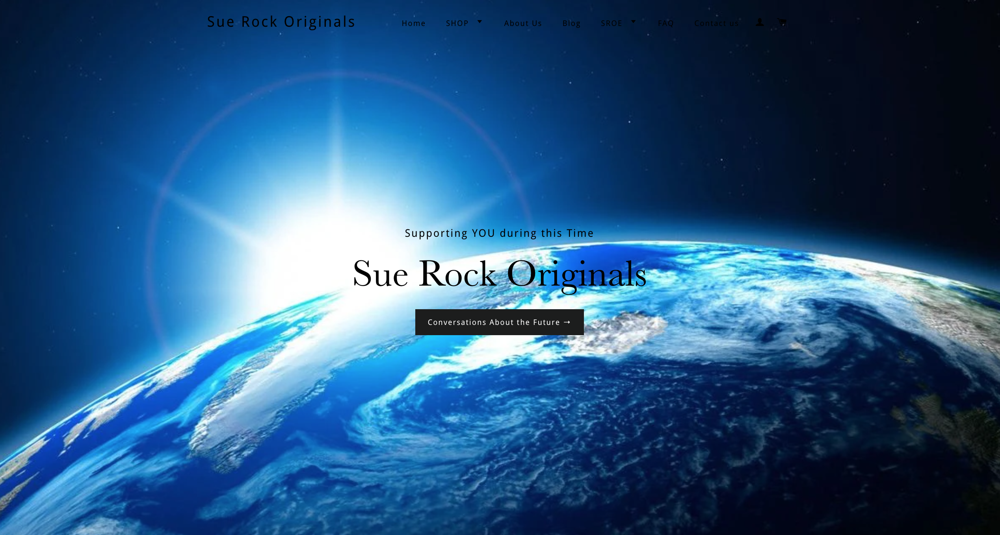Analysis:
- Optimize keywords to long-tail keywords for more clearly defined intent. For example, "best sustainable fabrics for women of all sizes," or "domestic violence survivors New York."
- Update the Sue Rock Originals website to the current topic and contents as the same as the Sue Rock Shopify.
- Include more searchable keywords. For example, keywords ”sustainable fabrics”. The report from Semrush analytics: 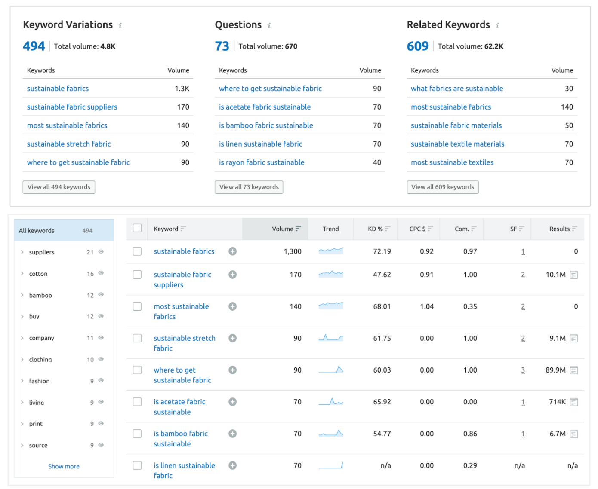
Architecture
The higher load speeds provide users a better experience when they browse the website, and the amount of time a website takes to load impacts its ability to perform well on SEO. I used PageSpeed Insights on speed analysis.
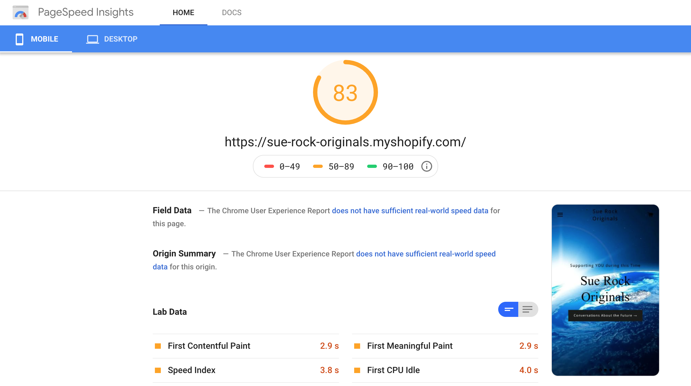When we analyzed two websites, we found out that most users come from mobile devices. They come to websites through the link on Facebook or click the link on the bio of Instagram. Therefore, it is crucial importance that pages are mobile-friendly.
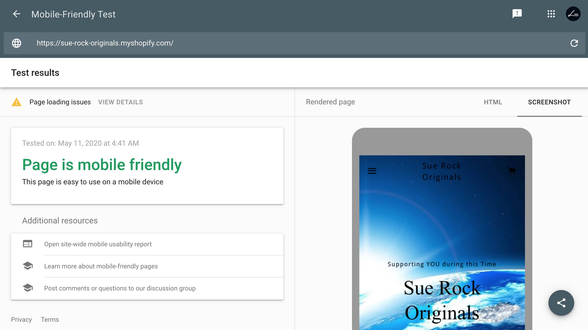Both websites are not Accelerated mobile pages (AMP) that offers faster load times than standard HTML5 documents. They should better create AMP pages to accommodate mobile users.
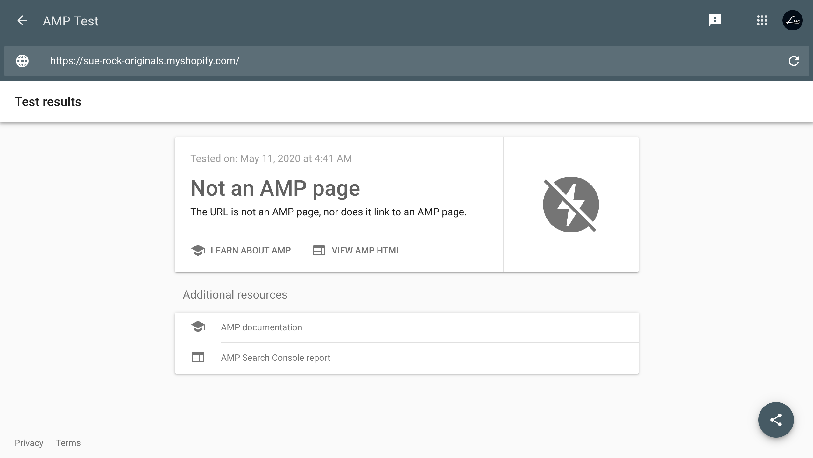Then, I used WooRank again to check if the website has a robots.xmil file., XML sitemap, and 404 pages.
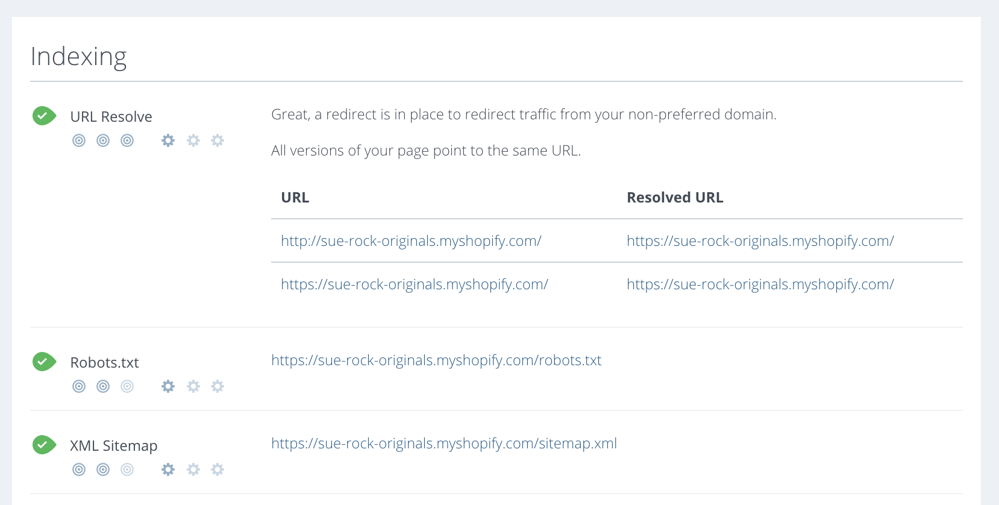Analysis:
- Even if all your photos are under 500 KB, if you have a large number of images on a page it can cause issues such as slow loading speeds.
- Resize the following images on the Sue Rock Originals website under 1000k. 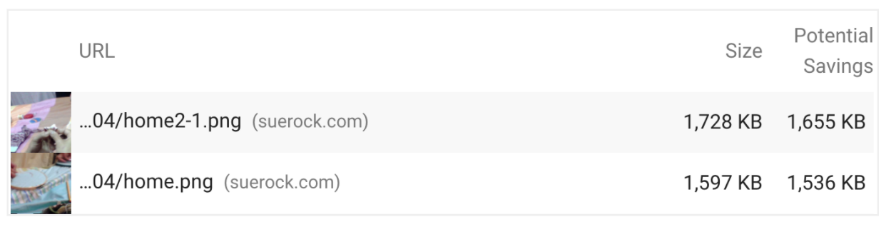
Social
Two websites both pass social media sharing options and active channels successfully. Both key pages have social media share options, and their hyperlinks are clickable and link to social media accounts.
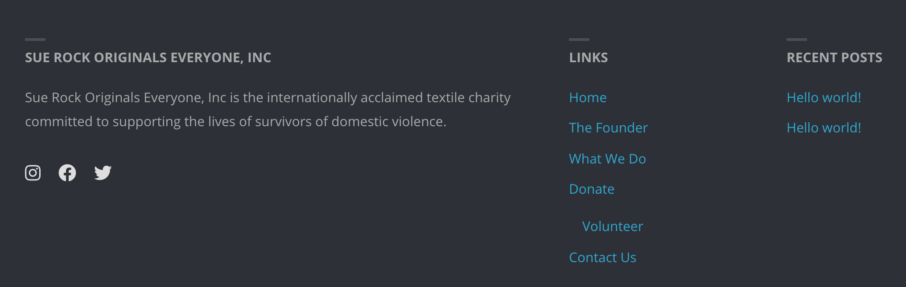 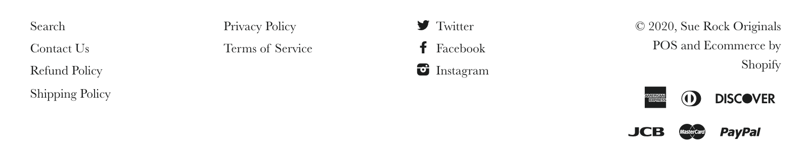Summary Table
Based on the five-category analysis above, I created the Spreadsheets below to note down the findings of each category.
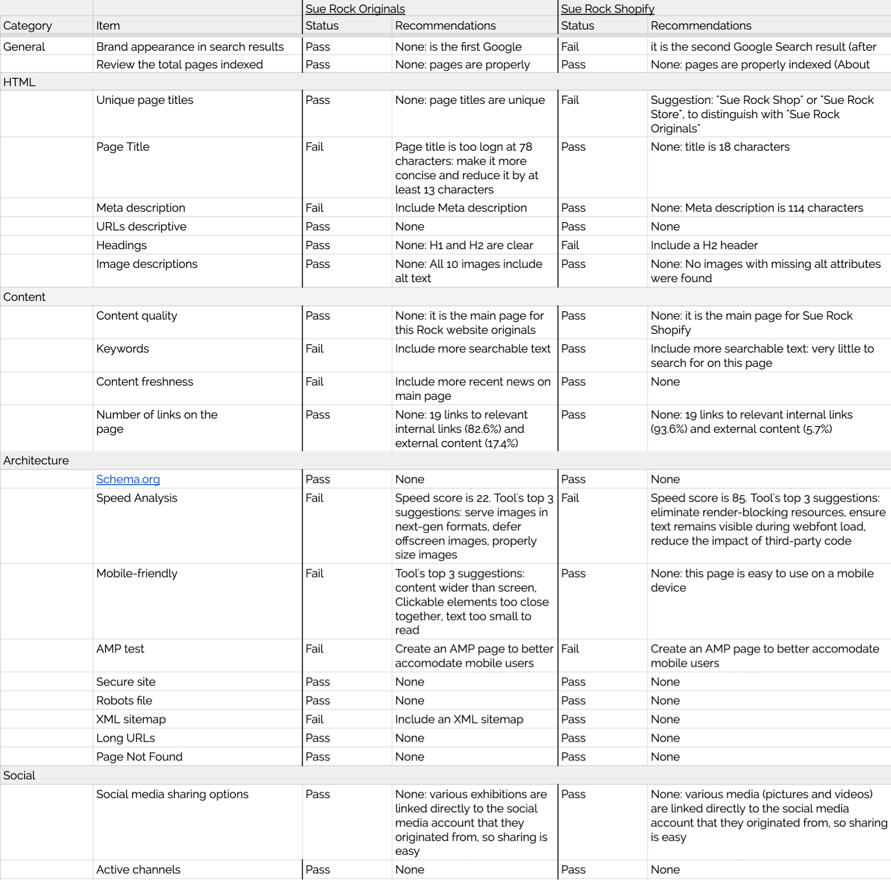This SEO Audit recommendation shows improvement spaces for both the Sue Rocks Originals website and the Sue Rocks Shopify to provide user-friendly experiences for the viewers. Also, the refinement of an SEO can further create better conversions for e-commerce on sales performance.
FINDINGS & RECOMMENDATIONS
Findings:
- Page titles are not formatted to industry standards.
- Keywords are not optimized for Google search.
- Website photos are large and causing longer load times.
Recommendations:
- Rename page titles with descriptive words.
- Create a keyword-content map to rise in search results.
- Add Sue Rock Shopify link to Sue Rock Originals website’s for promotion.
- Resize photos for faster loading speed.